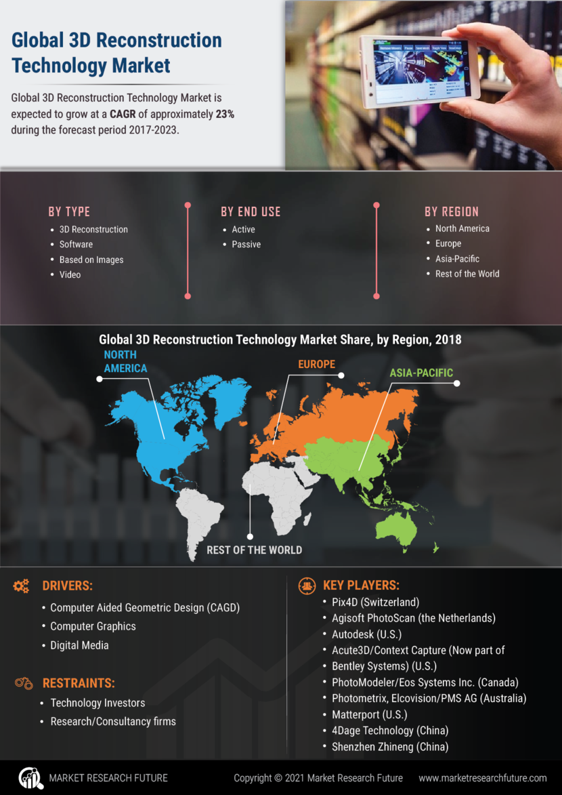

What are the main features of 3D spaces?
While this is not new technology, the use of 3D reconstruction has been rising during the pandemic, especially in the real estate industry, as lockdowns prevented potential buyers from visiting properties in person. Therefore, some agencies adopted 3D reconstruction technology to generate virtual property tours. Much like the metaverse we imagined, buyers could look around potential new homes from anywhere and make purchases without even having stepped foot inside.
One of the challenges for the metaverse is to create a digital environment that appears as close to our real world as possible
With the help of 3D reconstruction, it can create realistic and natural-looking spaces. Through special 3D cameras, we can take our world online by rendering accurate 3D photorealistic models of buildings, physical locations, and objects.

The 3D spatial data and 4K HD photography are then passed to computers to process and generate a virtual replica in the metaverse for users to experience. These virtual replicas of physical world objects can also be referred to as digital twins.
Last month, a team of researchers from the University of Washington debuted an experimental technique that cuts characters straight out of a static 2D image and transforms them into 3D animations that literally step out into the real world with the help of AR as the medium. The Photo Wake-Up method can be applied to photos, posters, or even graffiti art, infusing life into the embedded Pinocchios so that they can freely walk, run, and jump out into reality.
The idea of reconstructing a 3D model based on a 2D image is actually not that new. In fact, Andrew Ng’s Stanford 3D Reconstruction Group was toiling on it over a decade ago. There has however never been a better time (or more urgent need) for the solution to emerge than now, and it has all to do with the problem of content supply faced by the adolescent VR and AR industry.
3D scanning tech like photogrammetry and volumetric capture are continually evolving in terms of the quality of the output, cutting more and more time on production cycles, which makes it easier to render the real world itself into a direct source for churning out 3D models. This is the kind of tech that helps to make things look less intimidating for current creators, as well as any fence-sitters or potential newcomers.
It might be surprising when a lower dimension comes to the aid and assist a higher one, but it is definitely a most welcome one. The tech isn’t a band-aid remedy for the short-term, but represents an altogether new channel for “transmigrational” content that has manifested into immersive reality at exactly the right moment as the VR and AR industry continues its march towards its inflection point, which by my estimation could be this year.